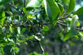

Common name in Telugu : Chillanki, chillingi

Diagnostic characters
Botany & morphology
Regeneration
Ecology
Distribution
Uses
Small trees or shrubs up to 3 – 6 m tall; branchlets ending in spines. Leaves compound with alternate leaflets. Flowers small. Fruit glabrous reniform pods.
Leaves compound, crowded at nodes of spinous branchlets; 6 – 9 cm long; leaflets 5 - 11, alternate, elliptic-ovate, apex obtuse or emarginate, base cuneate.
Inflorescence axillary racemes.
Flowers small, purplish-white, zygomorphic, bisexual; calyx 5 campanulate; corolla papilionaceous, petals 5; stamens 10, monadelphous, anthers minute; ovary free, style incurved, stigma capitate.
Fruits pod, brownish, flat, falcate, 1-seeded.
Epigeal or modified epigeal germination.
Common in intertidal mangrove forests along the coasts.
India, Bangladesh, Burma and Malaysia.
Wood is used for furniture and ordnance.
Top of the page